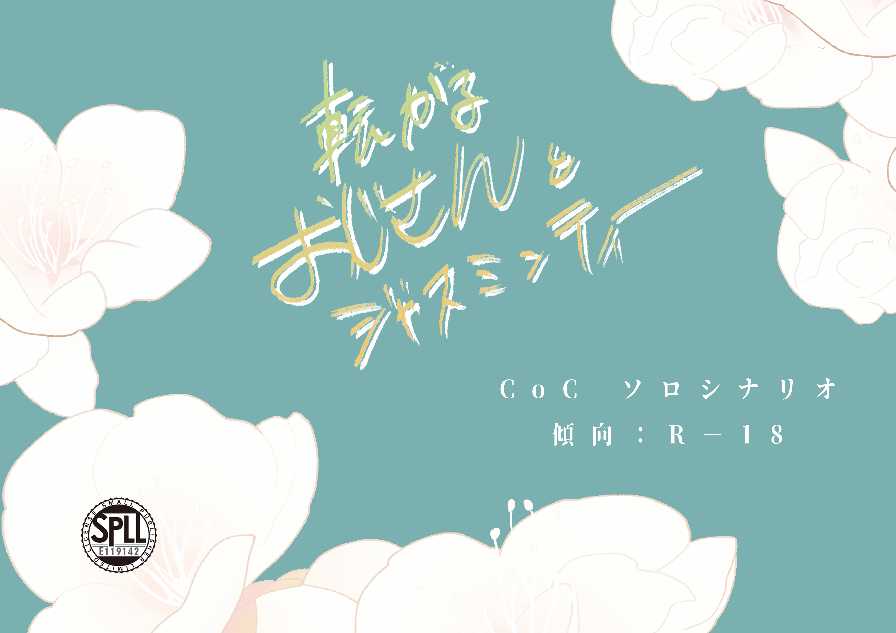
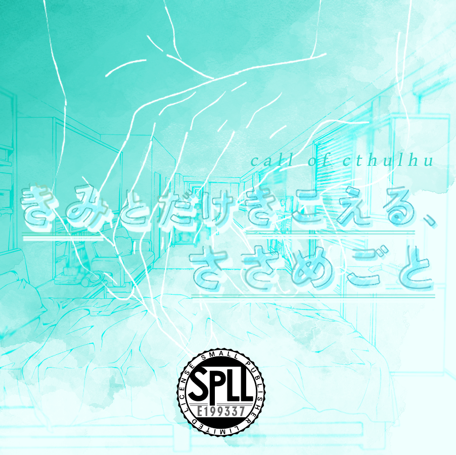
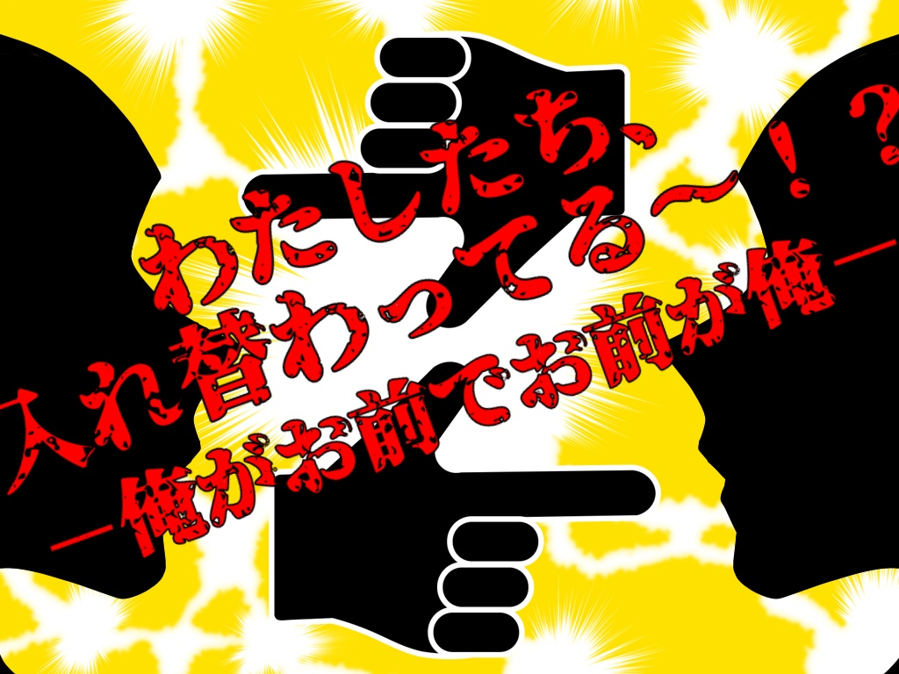

新着一覧
もなかも

てとせ
星夜
めこつ

ぷわちん
テキセ単発
Holiday's Midnight
おりゆう
やぶかな
あさはる
やぶかな 仲良くしないと死ぬ部屋
やぶかな
おりゆう

転がるおじさんとジャスミンティーやぶかな

きみとだけきこえる、ささめごとあさはる

わたしたち、入れ替わってる～！？やぶかな 仲良くしないと死ぬ部屋
やぶかな
暴走！妄想！ナマモノノート！
媚バレックス
KPレス
単発
- 盲心未遂(いわひらげんみ❌)
- ラブレターフロムロラン
- レッツロシアンうどん (灰よかげんみ❌)
- 捨てKPC (脱獄乙女げんみ❌)
- 慄け！因習村
- 村ホラーRTA
- 死にたがり電車
- ラーメンは乙女の嗜み (脱獄乙女げんみ❌)
- ハイフェッツをなぞる病
- 宇宙船ニル・ノート号の残響
初恋性ストックホルム症候群
鰯と柊_あさはる
鰯と柊_しょじょめめ
灰になってよかった
カタシロ